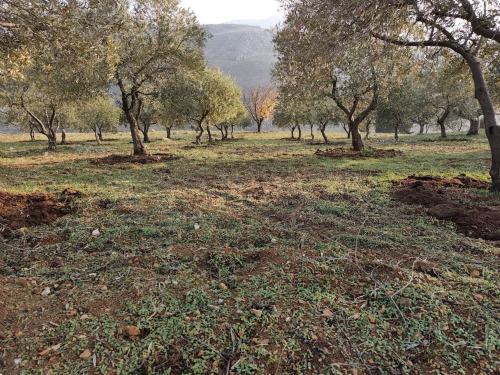

Besides my studies, I like spending time on my farm. I have olive trees, and I take care of the land and help with the harvest season. Every Friday, I usually go there to work and enjoy the fresh air.
I love rural life and the feeling of being close to nature.